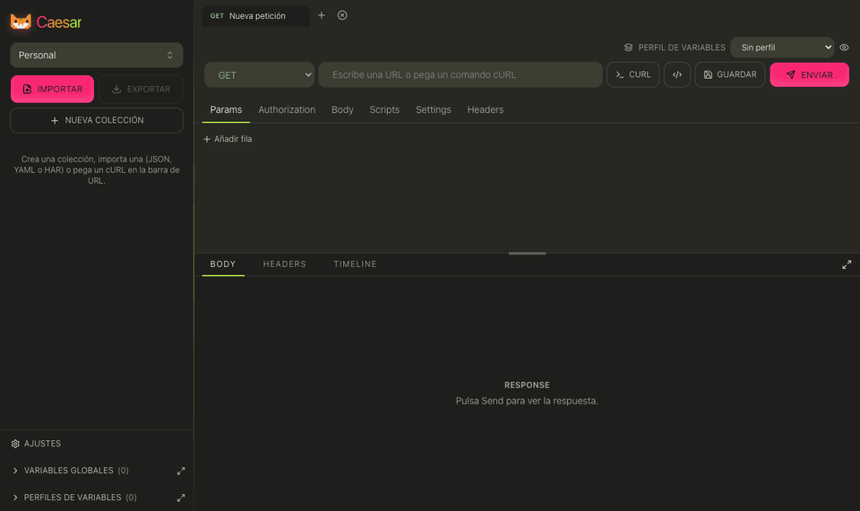

Home › Guida alle funzionalità
Guida a Caesar: tutte le funzionalità, una per una
Caesar è un client API desktop pensato per essere veloce: si avvia all'istante, tiene tutto sul tuo computer e non ti chiede un account per iniziare. Questa guida passa in rassegna ogni funzionalità con una GIF del risultato reale, dalla tua prima richiesta fino a test, GraphQL, WebSocket e lavoro di squadra.
Cos'è Caesar?
Caesar è un client API desktop per Windows, macOS e Linux. Ti permette di creare, inviare e testare richieste HTTP, GraphQL e WebSocket, organizzarle in collezioni e condividerle con il tuo team, il tutto da un'interfaccia pulita in cui colore e tastiera ti fanno risparmiare clic.
- Local-first: in modalità Guest le tue collezioni vivono sul tuo dispositivo. Funziona offline e senza account.
- Davvero veloce: è costruito con Rust e Tauri, non con un browser incorporato.
- Familiare: se vieni da Postman o Insomnia, puoi importare le tue collezioni e i tuoi script
pm.*continuano a funzionare. - Fair Source (FSL): il codice è pubblico e gratuito da usare. Non è open source: venderlo è vietato.
Per chi è? Per chiunque testi API ogni giorno (backend, frontend, QA, mobile) e voglia uno strumento leggero, privato e senza attriti. Anche per chi deve condividere collezioni con il proprio team senza montare infrastrutture.
Perché è così veloce
La velocità di Caesar non è un trucco: nasce da come è costruito.
Installa Caesar
Scarica l'installer per il tuo sistema dalla pagina di download o dal tuo app store:
| Sistema | File / Store |
|---|---|
| Windows | Installer .exe a 64 bit (anche .msi) · In arrivo su Microsoft Store |
| macOS (Intel e Apple Silicon) | .dmg universale, firmato e notarizzato da Apple |
| Ubuntu (Snap Store) | sudo snap install caesar o dall'Ubuntu App Center (Snap Store) |
| Linux | .deb (Debian/Ubuntu) o AppImage (qualsiasi distro) |
La prima volta potrebbe comparire un avviso di sistema, soprattutto su Windows (SmartScreen). È normale per un progetto nuovo, e la guida agli avvisi spiega su cosa cliccare. Dopodiché, Caesar si aggiorna da solo.
Nessuna riga di comando. Caesar è un'applicazione desktop: per usarla non servono Node, Docker né altre installazioni.
La tua prima richiesta
Apri Caesar e clicca su Nuova scheda (Ctrl+T). Scegli il metodo (GET, POST, PUT, PATCH, DELETE, HEAD o OPTIONS), scrivi l'URL e clicca su Invia o premi Ctrl+Enter.
- Scrivi l'URL nella barra in alto.
- Clicca su Invia. Vedrai un'animazione dei passaggi della richiesta (risoluzione del nome, connessione, invio, ricezione).
- Leggi la risposta qui sotto: stato, tempo, dimensione e body.
- Premi Ctrl+S per salvarla in una collezione.

Oltre ai sette metodi abituali, nelle Impostazioni puoi aggiungere metodi extra (per esempio quelli di WebDAV). Vengono rifiutati solo CONNECT e TRACE.
Parametri e header
Le schede Params e Headers usano un editor chiave/valore: aggiungi righe, le attivi o disattivi con la casella senza eliminarle, e l'URL si aggiorna da solo.

- Deseleziona una riga per testare senza di essa e senza perderla.
- Puoi usare
{{variables}}in chiavi e valori (vedi Variabili e profili). - Se incolli un URL con
?a=1&b=2, i parametri compaiono nella loro tabella.
Body della richiesta
Nella scheda Body scegli il formato che serve alla tua API:
| Tipo | Quando usarlo |
|---|---|
| JSON | API REST moderne. Editor con controllo della sintassi e colori. |
| Testo | XML, testo semplice o altro contenuto grezzo. |
| Form-data | Moduli con file allegati (fino a 100 MB per file). |
| x-www-form-urlencoded | Moduli classici. |
| GraphQL | Editor dedicato per Query e Variables (vedi GraphQL). |

Per sicurezza, Caesar allega solo i file che hai scelto tu nel selettore file del sistema.
Leggere la risposta
La risposta mostra lo stato (con colori), il tempo e la dimensione, in tre viste:
- Pretty: JSON formattato e colorato. Puoi nascondere i valori vuoti per leggerlo meglio.
- Raw: il testo esattamente come è arrivato.
- Timeline: i passaggi della richiesta con la loro durata.
Con il filtro JSONPath tieni solo la parte che ti interessa, per esempio $.data[0].id. E con Ctrl+F cerchi dentro la risposta (vedi Schede e ricerca).
Le risposte vengono lette fino a 10 MB; se una è più grande, Caesar la tronca e te lo segnala così la finestra non si blocca.
Incollare e copiare cURL
Se qualcuno ti passa un comando curl (dalla documentazione di un'API, dagli strumenti per sviluppatori del browser o da un collega), incollalo direttamente nella barra dell'URL. Caesar crea la richiesta con il suo metodo, gli header e il body.

E viceversa: copia qualsiasi richiesta come cURL per condividerla in un ticket o eseguirla in un terminale. C'è un comando apposito (nessuna scorciatoia predefinita, puoi assegnarne una).
Autenticazione
Nella scheda Authorization scegli come identificarti. Caesar supporta questi tipi:

L'opzione Eredita è la più comoda: definisci l'autenticazione una volta sulla collezione o sulla cartella e ogni richiesta al suo interno la usa. Se il token cambia, lo cambi in un solo posto.
Consiglio: salva il token in una variabile ({{token}}) e usa quella variabile nell'autenticazione; così non lo incolli in ogni richiesta.
Variabili e profili
Le variabili ti permettono di scrivere {{baseUrl}} invece di un URL fisso. Ci sono tre livelli:
- Variabili globali: valide in tutte le tue collezioni.
- Variabili di collezione: solo per quella collezione o cartella.
- Profili di variabili: set con nome (Development, Staging, Production...) che attivi con il selettore accanto a Invia. È l'equivalente degli Environments di Postman.

- Le variabili
{{x}}si vedono con un colore diverso in URL, header, parametri e autenticazione, così non te ne sfugge nessuna. - Ctrl+clic su una variabile ne apre il valore per vederlo e modificarlo senza uscire dalla richiesta.
- Ctrl+Space apre il selettore delle variabili.
- Puoi contrassegnare le variabili come segrete così non sono visibili a colpo d'occhio.
- Quando importi da Postman, i suoi environment diventano profili e i suoi globals diventano variabili globali.
Test e script
La scheda Scripts esegue uno script quando arriva la risposta (i risultati compaiono in una scheda del pannello della risposta). Usa una sintassi in stile Postman (pm.*), quindi quello che già conosci funziona:
pm.test("responds 200", () => {
pm.expect(pm.response.code).to.equal(200);
});
const data = pm.response.json();
pm.test("returns users", () => {
pm.expect(data.length).to.be.above(0);
});
pm.testepm.expectper controllare stato, header e body.pm.response.json()per leggere il body già interpretato.pm.environment.set,pm.collectionVariables.setepm.globals.setper salvare valori.
Sicuro per progettazione. Gli script girano in un interprete dedicato per un sottoinsieme di JavaScript: niente rete, nessun accesso al file system e niente eval. Per questo uno script importato non può fare nulla al di fuori del proprio ambito.
Concatenare le richieste
Un caso tipico: accedi e usa il token nelle altre richieste. Con un test sulla richiesta di login:
const r = pm.response.json();
pm.environment.set("token", r.access_token);Da quel momento, qualsiasi richiesta può usare {{token}} nel suo header o nell'autenticazione Bearer. Esegui il login una volta e il resto è autenticato, senza copia e incolla.
Collezioni e cartelle
Le collezioni sono il quaderno dove tieni le tue richieste. Creane una dalla barra laterale, aggiungi cartelle dentro le cartelle e trascina per riordinare.

- Ogni collezione o cartella può avere le proprie variabili e la propria autorizzazione, ereditate da tutto ciò che contiene.
- Si salva da solo: Caesar salva in automatico e mantiene le tue schede e le tue bozze quando lo chiudi.
- Puoi condividere una collezione con il tuo team (vedi Sync e team).
Importa ed esporta
Non parti da zero. Caesar importa quello che hai già ed esporta quando vuoi:
| Formato | Importa | Esporta |
|---|---|---|
| Postman (collezioni ed environment v2.1) | Sì | Sì (JSON) |
| Insomnia | Sì | – |
| Caesar JSON | Sì | Sì |
| YAML | Sì | Sì |
| HAR (dal browser) | Sì | Sì |
| cURL | Incollandolo nella barra dell'URL | Copia come cURL |

Prima di condividere una collezione, Caesar può fare un backup così non perdi nulla.
Generatore di codice
Con il pulsante </> trasformi la richiesta attiva in codice pronto da incollare nel tuo progetto. Ci sono 20 linguaggi e librerie, tra cui cURL, Python (Requests), JavaScript (Fetch, XHR), Node.js (Axios), Go, Rust, Java, Kotlin, C#, PHP, Ruby, PowerShell, Swift e Dart.

Puoi regolare opzioni come indentazione, timeout o il seguire i redirect, e copiare il risultato con un clic.
GraphQL
Scegli il body GraphQL e Caesar ti dà un editor per la Query e un altro per le Variables, proprio come in Postman:
- Carica lo schema tramite introspection.
- Autocompletamento di campi e tipi mentre scrivi.
- Esplora schema per navigare tra tipi e campi.
- Beautify per formattare la query.
- Genera le variabili dalla query e un selettore di operazione quando ce n'è più di una.

Le richieste GraphQL si importano e si esportano con Postman.
WebSocket
Crea una richiesta WebSocket, connettiti e guarda la conversazione in una timeline: cosa invii e cosa ricevi, con orario e dimensione.

- Scrivi l'URL con
ws://owss://(se usihttp(s), viene convertito). - Puoi impostare dei sottoprotocolli separati da virgole.
- Invia messaggi di testo o binari (in esadecimale o base64) e ispeziona i binari in un hex dump.
- Supporta
{{variables}}nell'URL.
Schede e ricerca
Lavora con tutte le schede che ti servono. Caesar ricorda quelle che avevi aperte e le ripristina esattamente com'erano quando lo riavvii.

- Ctrl+T nuova, Ctrl+W chiudi, Ctrl+1…9 vai alla scheda N.
- Alt+← / → torna alla scheda visitata prima o dopo.
- Ctrl+F cerca nella risposta o nell'editor.
- Clic destro o Ctrl+Shift+W le chiude tutte e ti porta alla schermata iniziale con il gatto.
Su macOS, Ctrl viene sostituito da Cmd.
Workspace
Un workspace è un insieme separato di collezioni, variabili e schede: uno per il lavoro, uno per i progetti personali, uno per ogni cliente. Cambi dal selettore nella barra laterale.

La modalità Guest e gli account senza Pro includono un workspace; con Pro puoi averne quanti ne vuoi.
Scorciatoie da tastiera
Ogni comando di Caesar ha una scorciatoia e puoi cambiarle tutte. Apri l'editor con Ctrl+/.

| Azione | Scorciatoia predefinita |
|---|---|
| Invia la richiesta | Ctrl+Enter |
| Salva nella collezione | Ctrl+S |
| Nuova scheda / Chiudi scheda | Ctrl+T / Ctrl+W |
| Vai alla barra dell'URL | Ctrl+L |
| Cerca | Ctrl+F |
| Scegli una variabile | Ctrl+Space |
| Apri le impostazioni | Ctrl+, |
| Vedi e modifica le scorciatoie | Ctrl+/ |
Puoi anche creare azioni personalizzate che concatenano più comandi e mettere i pulsanti che preferisci accanto all'URL.
Temi, font e lingue
Caesar include sei temi: Monokai (predefinito), Dracula, Tokyo Night, Nord, One Dark e GitHub Light per chi preferisce lo sfondo chiaro.

Puoi anche scegliere il font e la dimensione del testo, disattivare le animazioni e regolare la larghezza della barra laterale. L'interfaccia è disponibile in spagnolo, inglese, tedesco, francese e italiano.
Impostazioni di rete
Nelle Impostazioni controlli come vengono inviate le richieste:
| Impostazione | Cosa fa |
|---|---|
| Segui i redirect | Segue fino a 10 redirect, oppure nessuno. |
| Timeout | 30 secondi per impostazione predefinita. Con 0 o più di 1 ora si usa il massimo di 3600 s, utile per fare debug senza che scatti l'errore. |
| Verifica SSL | Disattivala solo per testare server con certificati autofirmati. |
| Versione HTTP | Automatica, HTTP/1.1 o HTTP/2. |
| Metodi extra | Aggiunge metodi personalizzati oltre a quelli abituali. |
Sync e team
Con un account Pro puoi usare le stesse collezioni su più computer e condividerle con altre persone.
- Sync personale: le tue collezioni, variabili e profili compaiono su tutti i tuoi dispositivi. Le modifiche vengono unite per elemento, così due dispositivi non si sovrascrivono il lavoro a vicenda.
- Cifrato sul tuo dispositivo: quello che viene caricato è cifrato già dal tuo computer; il servizio memorizza solo dati illeggibili.
- Chiave di recupero: la conservi tu, e ti permette di recuperare i tuoi dati se perdi un dispositivo.
- Collegare un nuovo dispositivo: si approva da un altro dei tuoi dispositivi con un codice a sei cifre che confronti su entrambi gli schermi.
- Team: condividi una collezione o un workspace con un codice; chi lo inserisce entra e vede le modifiche.

Importante: in una collezione condivisa, chiunque abbia il codice può leggerne e modificarne il contenuto; non ci sono ruoli. Condividi il codice solo con le persone che devono poter modificare.
Guest, account e Pro
| Modalità | Include |
|---|---|
| Guest (gratis) | Tutte le funzionalità delle richieste, test, GraphQL, WebSocket, import/export e generatore di codice. Dati solo sul tuo dispositivo, 1 workspace. |
| Account (prova di 7 giorni) | Come Guest, in locale, mentre decidi se attivare Pro. Dopo 7 giorni senza Pro, l'account viene eliminato. |
| Pro (abbonamento) | Sync cifrata, team e collezioni condivise, e workspace illimitati. |
Prezzo, periodo di fatturazione e tasse vengono mostrati nella pagina di pagamento prima di pagare. Puoi disdire quando vuoi da Impostazioni → Account e abbonamento → Gestisci abbonamento e ottieni il rimborso entro 14 giorni. Maggiori dettagli in Prezzi e abbonamento.
Privacy e sicurezza
- Nessuna telemetria né analytics. Caesar non invia dati di utilizzo.
- L'interfaccia non fa richieste di rete: le esegue il core in Rust, che convalida gli URL, consente solo http e https e limita la dimensione di risposte e file.
- Le tue chiavi non lasciano mai il sistema: la chiave di cifratura è salvata nel portachiavi del tuo sistema operativo.
- Permessi minimi e una policy di sicurezza rigorosa nell'applicazione.
- In modalità Guest i tuoi dati non lasciano mai il tuo dispositivo.
Altro in Sicurezza e privacy e nell'informativa sulla privacy.
Aggiornamenti
Caesar si aggiorna da solo: all'avvio cerca una nuova versione e, se c'è, la scarica, la installa e si riavvia. Le tue schede e le tue bozze vengono mantenute. Ogni pacchetto è firmato e l'applicazione verifica la firma prima di installarlo.
- In Impostazioni → Aggiornamenti puoi disattivarli o cliccare su Verifica aggiornamenti.
- Su Linux, se installi Caesar dallo Snap Store (
sudo snap install caesaro l'Ubuntu App Center), Snap lo aggiorna automaticamente; con l'AppImage si aggiorna dentro l'app, e il.debsi reinstalla a mano.
Buone pratiche
- Usa le variabili per tutto ciò che cambia (server, versione, token) e i profili per ogni ambiente.
- Definisci l'autenticazione sulla collezione e lascia le richieste su "Eredita".
- Aggiungi almeno un test a ogni richiesta importante: stato e un controllo del body.
- Dai alle richieste un nome con un verbo e una risorsa ("Elenca utenti", "Crea ordine") e raggruppale in cartelle.
- Esporta una copia delle tue collezioni importanti ogni tanto.
- Non lasciare segreti nell'URL: usa variabili segrete o l'autenticazione.
- Usa un workspace per progetto o cliente così le variabili non si mescolano.
Risoluzione dei problemi
La richiesta non si connette
Controlla che l'URL inizi con http:// o https://, che non ci siano variabili non risolte (si vedono con un colore diverso) e che tu abbia una connessione. Guarda la timeline della risposta: ti dice quale passaggio fallisce.
Errore del certificato SSL
Se stai testando un server locale con un certificato autofirmato, disattiva Verifica SSL nelle Impostazioni. Riattivala per le API reali.
Ricevo 401 o 403
Controlla la scheda Authorization: se è su "Eredita", controlla quella della collezione. Verifica che il token non sia scaduto e che la variabile esista nel profilo attivo.
La richiesta va in timeout
Aumenta il timeout nelle Impostazioni. Con 0 si usa il massimo (1 ora), pensato per il debug.
I miei test non fanno niente
I test vengono eseguiti dopo aver ricevuto la risposta, quindi devi inviare la richiesta. Se c'è un errore nello script, viene mostrato accanto ai risultati.
Non riesco a sincronizzare o condividere
Queste funzionalità richiedono Pro. In modalità Guest o con l'account in prova, Caesar funziona in locale. Se hai già pagato, clicca su Ho già pagato, verifica in Account e abbonamento.
Domande frequenti
Caesar va bene per testare le API?
Sì: copre REST, GraphQL e WebSocket con test, variabili, profili, importazione da Postman e generazione di codice, in un'app leggera che funziona offline.
È gratis e open source?
È gratis in modalità Guest e il suo codice è pubblico, ma non è open source: usa la licenza FSL e venderlo è vietato. Ogni versione diventa MIT dopo due anni.
Dove vengono salvate le mie collezioni?
Sul tuo dispositivo. Lo lasciano solo se attivi la sync o condividi con un team, e in quel caso sono cifrate.
Posso portare le mie collezioni di Postman?
Sì. Importa il file della collezione (e gli environment, che diventano profili) dalla barra laterale.
I miei script di Postman funzionano?
I test con pm.test, pm.expect, pm.response.json() e le funzioni per salvare variabili sì. Caesar usa un interprete sicuro per un sottoinsieme di JavaScript, quindi uno script che dipende da librerie esterne o dalla rete non verrà eseguito.
Esiste una riga di comando o un'integrazione con la CI?
Per ora Caesar è un'applicazione desktop. Puoi esportare le richieste come cURL o codice da usare nei tuoi script.
Mi serve un account?
No. L'account serve solo per sincronizzare e lavorare in team.
Su quali sistemi funziona?
Windows (.exe e .msi; in arrivo su Microsoft Store), macOS (Intel e Apple Silicon) e Linux (Ubuntu App Center / Snap Store con sudo snap install caesar, .deb e AppImage).
Provalo ora
È gratis da scaricare e non ti serve un account. Se manca qualcosa o trovi un bug, scrivici su GitHub.